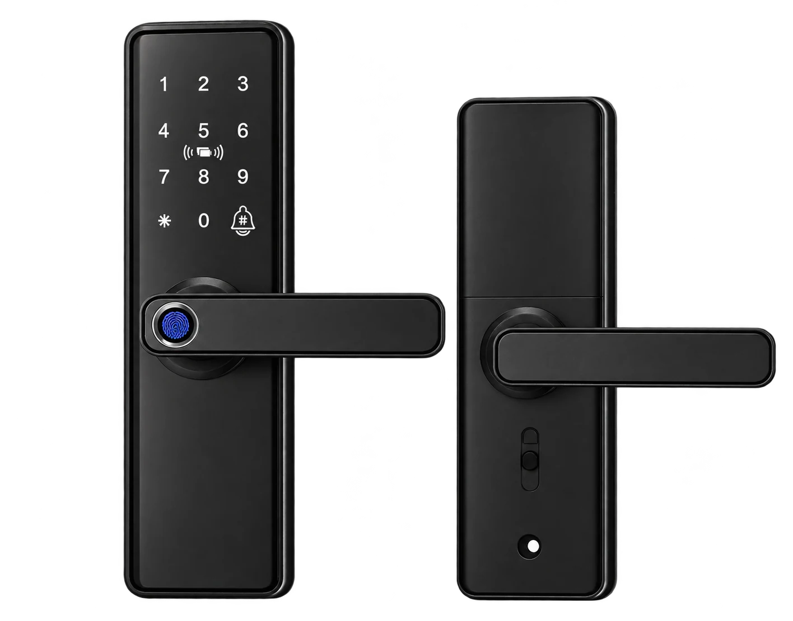

01

Smart com maçaneta
Quatro formas de acesso, em um conjunto com maçaneta de linhas discretas.
Conhecer solução
Quatro formas de acesso, em um conjunto com maçaneta de linhas discretas.
Aplicação
A escolha do modelo começa pela avaliação do material, da espessura e da furação da sua porta.
Consulte condições atuais.
Consultar esta solução